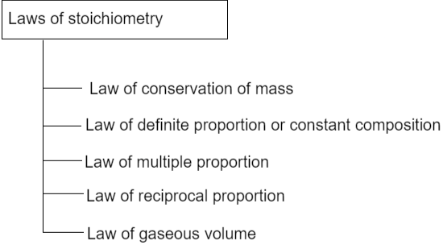

Atom is the smallest particle of an element which can take part in chemical reaction. It may have dependent or independent existense.
A molecule is the smallest part of an element or a compound which can exist freely under ordinary condition.
They contain single atom of the same element. Molecules of inert gases are monoatomic eg: He, Ne, etc.
They contain two atom of the same element. eg: H2 , N2 , O2 , etc.
They contain more than two atoms of the same element. Eg: Ozone (O3), Phosphorus(P4), etc.
Such molecules are made up of different toms which are classified as di, tri, tetra, atomic molecules, etc. depending upon the number of atoms. Eg: HCL, H2O, etc.
Short abberviation for the full name of the element is called symbol.
Gives information about the element.
Gives information about one gram of element. It gives information about 1 atomic weight of element.
The combining capacity of an element is called Valency.
Certain elements have more tahn one valency such condition is called variable valency.
| Element | Name | Valency |
|---|---|---|
| Iron | Ferrous | 2 |
| Ferric | 3 | |
| Copper | Cuprous | 1 |
| Cupric | 2 | |
| Gold | Aurous | 1 |
| Auric | 3 | |
| Mercury | Mercurous | 1 |
| Mercuric | 2 |
Atomic Mass Unit is defined as the quality of mass equal to 1/12th if the mass of an atom of Carbon (C12).
1 mole = 1g atom of element
1 mole = 6.023 x 1023 atoms
Now,
1g atom of carbon = 12g of carbon
or, 1 mole = 12g of carbon
or, mass of 6.023 x 1023 atoms = 12g of carbon
or, mass of 1 atom = 12/(6.023 x 1023) g
We know,
1 amu = (1/12) x mass of a carbon atom (C12)
or, 1 amu = (1/12) x (1/6.023 x 1023) g
Therefore,
1 amu = 1.66 x 10-24g
Relative atomic mass is a number which expresses as to show how many times an atom of the element is
heavier than 1/12th of the mass of a carbon atom.
Relative Atomic Mass = mass of an atom / (1/12)th mass of carbon atom
Atomic mass of an element expressed in terms of gram is known as gram atomic mass.
No. of gram atom = weight of element in g / atomic weight of element
Naturally occuring cholrine is 75% Cl-35 which has atomic mass of 35 amu and 25% Cl-37 which has atomic mass of 37 amu.
Average Atomic weight of Cholrine = 75% of 35 + 25% of 37
= 75% x 35 + 25% x 37
= 26.25 + 9.25
= 35.5 amu
Molecular mass of a substance may be defined as the average relative mass of its
molecule as compared to the mass of an atom of Carbon(C12).
Molecular weight = Weight of 1 molecule of substance / (1/12)th the weight of Carbon atom
Molecular mass of compound expressed in terms of gram is called gram molecular mass.
Eg:
Molecular weight of H2O2 = 34 amu
Gram molecular weight of H2O2 = 34g
The formula which gives the simple whole number ration of the atom of various element present in on molecule of the compound is called empirical formula.
A shorthand notation for the molecule of a substance in terms of symbol and it gives actual number of atoms of each element present in one molecule of that substance is called its molecular formula.
| Compound | Empirical Formula | Molecular Formula |
|---|---|---|
| Hydrogen Peroxide | HO | H2O2 |
| Benzene | CH | C6H6 |
| Glucose | CH2O | C6H12O6 |
| Ethane | CH3 | C2H6 |
| Common Name | Scientific Name | Molecular Formula |
|---|---|---|
| Marble | Calcium Carbonate | CaCO3 |
| Sand | Silicon dioxide | SiO2 |
| Common Salt | Sodium Chloride | NaCl |
| Washing Soda | Sodium Carbonate | Na2CO3 |
| Vinegar | Acetic Acid | CH2COOH |
| Caustic Soda | Sodium Hydroxide | NaOH |
| Caustic Potash | Potassium Hydroxide | KOH |
| Baking Powder | Sodium Bicarbonate | NaHCO3 |
| Bleaching Powder | Calcium Hypochlorite | Ca(OCl)2 |
| Plaster of Paris | Calcium Sulfate Hemihydrate | CaSO40.5H2O |
| Name | Radicals | Name | Radicals |
|---|---|---|---|
| Formate | HCOO- | Hypochlorite | ClO- |
| Acetate | CH3COO- | Hypobromite | BrO- |
| Bicarbonate | HCO3- | Hypoiodite | IO- |
| Bisulphate | HSO4- | Permagnate | MnO4- |
| Bisulphite | HSO3- | Thiocyante | SCN- |
| Cyanite | CNO- | Dichromate | Cr2O7- |
| Cyanide | CN- | Oxalate | C2O4-- |
| Isocyanide | NC- | Thiosulphate | S2O2--- |
| Hydride | H- | Carbonate | CO3-- |
| Nitrate | NO3- | Oxide | O-- |
| Nitrite | NO2- | Peroxide | O2-- |
| Chlorate | ClO3- | Perchlorate | ClO4- |
| Hydroxide | OH- | Bromide | Br- |
Isotopes - Element with same atomic number but different atomic weight.
Isobars - Element
with different atomic number but same atomic weight.
Stiochiometry is defined as a calculation which deals with the measurement of mass and volume relationship of reactant and product.

It states that the total mass of reactants consumed is equal to total mass of product formed.
Mathematically,
Total mass of reactant = Total mass of product
Modefied law of conservation of mass
It states that the total energy and mass of reactant consumed is equal to total mass and energy of product formed.
It states that a chemical compound is always found to be made up of the same element combined together in a fixed proportion by weight.